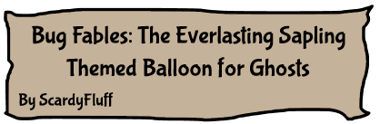
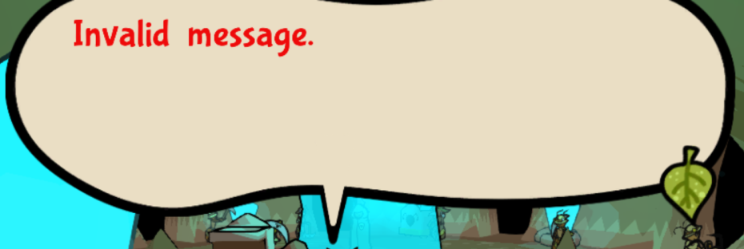
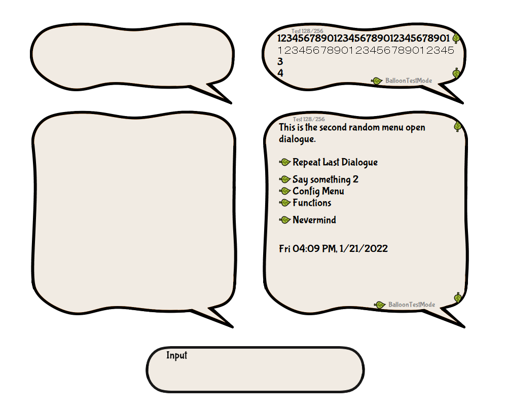

Bug Fables

So! Bug Fables!
It's a Turn-Based RPG! (I think?) It's also a spiritual successor to the first two Paper Mario Games! It has a REALLY interesting plot, and is generally well made!
...Please play it! You won't regret it! It's available on PC and Switch sooo...
Features

This balloon is based on the speech bubbles in the game!

It also has smooth edges as well as an Address input box!
Trivia
* I was gonna make the online animation outside the balloon, but at the time I made this, it wasn't possible. Maybe I'll do that in the future?